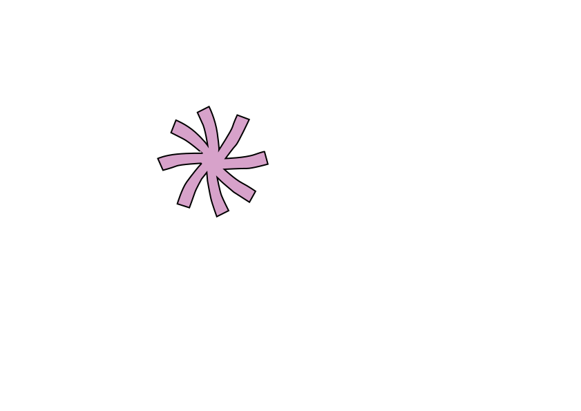
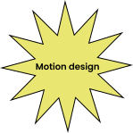
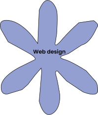
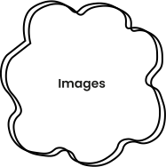
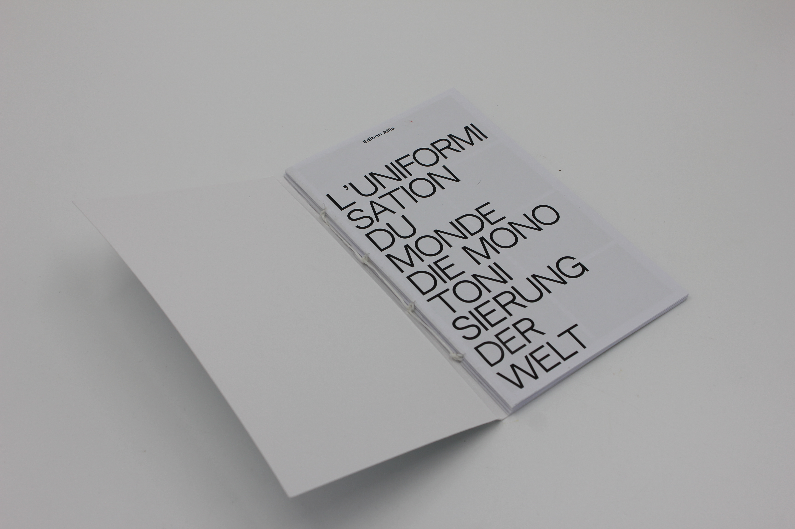
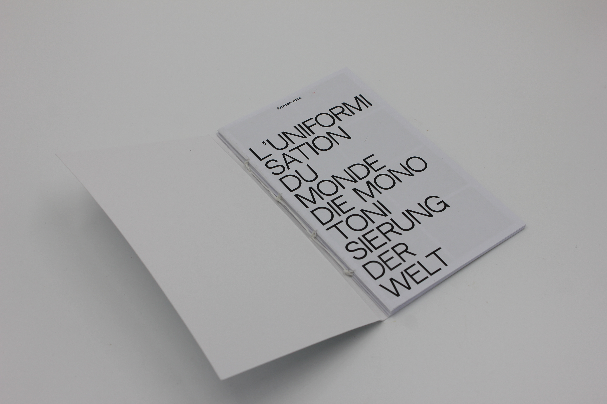

Web design - Web to print
Ce projet Sites Webprend naissance d’un interêt pour l’image. la collecte d’image notamment. L’image que l’on trouve sur les nouveaux supports de diffsionn de l’image sur internet
tels que Pinterest. Les images sont aménées à flotter et cohbiter par affinités dans l’espace dans une logique d’une narration. C’est notamment Mac Adams cité plus haut qui s’intérrèsse à la manière dont les images peuvent créer la narration
et qu’il est possible de créer une narration à partir de seulement trois image comme il explique dans Le vide narratif. Le site nous accueille sur une page où les images seront disposées en taille réelles puis lorsqu’il s’agit d’imprimer,
une tout autre forme est dévoilée. Vous retrouverez le lien ci-dessous:

Médiatract vidéosurveillance
Il s’agit ici de créer un médiatract c’est à dire un support de revendication. En locurence, j’ai tenté une approche assez ironiqe quand la présence des caméras de vidéosuveillance dans les villes qui sont une menace à notre liberté.
Visage instagram
Il s'agit d'une animation illustrant un article publié par Le Monde "Visage instagram" : construction sociale ou fruit de l’évolution ? Débat intense autour de notre attirance pour le visage instagram. J’ai le souhait
de faire le raprochement d’un questionnement personnel sur l’eugénisme et plus particulièrement le souhait d’avoir le choix sur le corps d’un être humain et comment cette fois-ci les influenceurs s’emparent du support du réseau social afin
de diffuser l’image du corps «parfait» et prennent à leur tour une responsabilité sur l’évolution et les modifications de l’apparence. Quel est le rapport que l’on entretient avec notre corps et les réseaux sociaux ? Est ce que la virtualité
modifie le regard que nous avons de nous même ? Les visages virtuels seraient-ils le début d’une déformation de soi, de notre identité ?
Projet Photo
Il s’agit pour ce projet photographique dans un premier temps de choisir un livre d’un artiste photographique et de le photographier tout en restant dans le vocabulaire photographique de l’artiste. Dans un second temps ,
il s’agit de créer une série de photo dont il était question de reprendre le vocabulaire de ce dernier. En loccurence, je me suis intéréssée à l’approche photographique de Mac Adams qui s’intéresse à la narration à travers ce médium.


Seconde partie du projet


 note d'intention
note d'intention
 Quelques références qui nourrissent ma pratique.
Désordre de Philippe Dejonckheere
Quelques références qui nourrissent ma pratique.
Désordre de Philippe Dejonckheere
Note d'intention
Il s’agirait à travers le médium de la vidéo de réaliser un documentaire et d’aborder le sujet des médias qui via leur leur reportage diffusent un angle de vue très particulier sur l’évenement documenté. J’aimerai ainsi
à travers ce projet questionner la vérité. En effet, comme nous le savons les médias diffusent de l’information à travers le prisme de leur orientations politiques. Ils entretiennent ainsi une repsonsabilité face à la vérité qu’il nous expose.
Comment un seul et même événement peut-il être colporté afin de répandre sa propre vérité. Est ce qu’aujourd’hui un média peut-il donner à voir une information non biaisé ? Comment les médias manipulent l’information ?
Approche filmique
Il s’agira de produire un film documentaire avec des vidéos collectées. Le contenu des vidéos nous montrerons par un système comparatif, un seul événement traité par différents médias y compris les médias amateurs sur les réseaux sociaux afin d’en faire
ressortir les points de vue contradictoire des médias et la vérité que chaque média veut véhiculer.
Références
Un pays qui se tient sage, documentaire de David Dufresne
Bodycam, documentaire de Stéphane Myczkowski
SCHNEIDERMANN, arrêt sur images
NEIGHBORHOOD Kaori Kinoshita et Alain Della Negra

 Bonjour, je m'appelle Héloïse Gaben, je suis actuellement en troisième d'un DNA design mention design graphique multimédia à l'école supérieure d'art et de design des Pyrénées à Pau. Ma pratique se base sur des interrogations autour de la culture
autour des enjeux que peut causer la bascule au numériques. Mon document écrit traite de la représentzito que l'on a soi et de notre raport que l'on a à l'avatar dans les jeu vidéos. Je travaille et j'aimerai poursuivre ma pratique à travers
la question des images numériques qui nous entourent et notamment comment les images créee par des intelligences articificielles supposent des enjeux politiques.
Bonjour, je m'appelle Héloïse Gaben, je suis actuellement en troisième d'un DNA design mention design graphique multimédia à l'école supérieure d'art et de design des Pyrénées à Pau. Ma pratique se base sur des interrogations autour de la culture
autour des enjeux que peut causer la bascule au numériques. Mon document écrit traite de la représentzito que l'on a soi et de notre raport que l'on a à l'avatar dans les jeu vidéos. Je travaille et j'aimerai poursuivre ma pratique à travers
la question des images numériques qui nous entourent et notamment comment les images créee par des intelligences articificielles supposent des enjeux politiques.
L’uniformisation du monde - Edition
Il s’agissait ici de créer une édition dont le texte est l’uniformisation du monde de Stefan Sweig éctit en 1946 dont l’iconographie choisi est ici celle du film Koyaanisqatsi qui est un film documentaire et contemplatifréalisé par Godfrey
Redgio. La photographie du film est relativement intéressante de par les timelapse voulu par le réalisateur. Il propose une capture vidéo dont l’intervalle de capture est rallongé. Le rythme est travaillé selon temps inversé ou plus ou
moins lent. Avec des cadrages sérrés ou d’ensemble. J’ai décidé de confronter ainsi le texte de Stefan Sweig et l’iconographie de Koyaanisqatsi car il est question d’exprimer le rythme éffréné par lequel la société atuelle évolue. La
globalisation a un impact certain sur ce phénomène d’uniformisation et koyanisqatsi nous en partage le témoignage visuelle. La mise en page des images est voulu dans une narration (image par seconde) afin d’exprimer, une cetaine cadence
relative à la globalisation.
 
